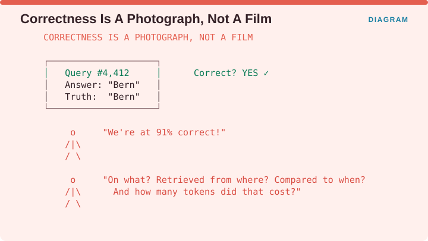
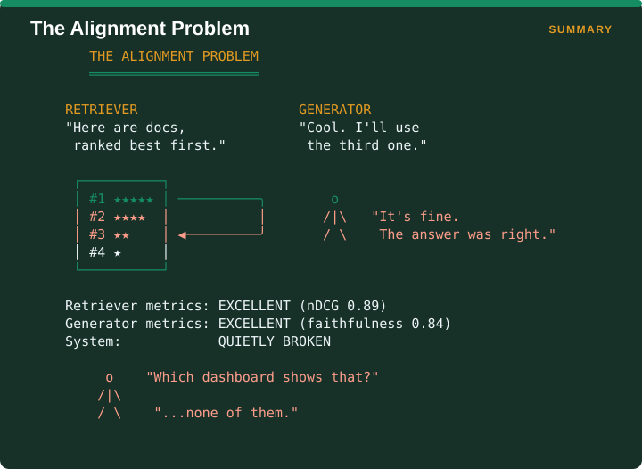
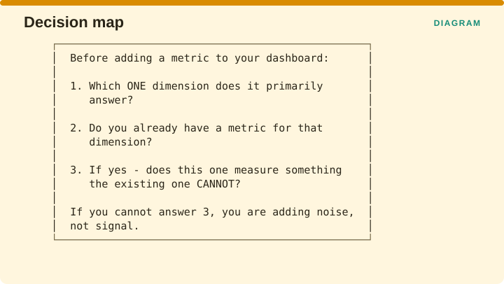

Measuring Retrieval › Chapter 1 - The Four Dimensions
Chapter 1 - The Four Dimensions
1.1 Why dimensions at all
A list of ninety metrics is not a catalogue, it is a menu, and menus encourage the worst habits in evaluation. Given a menu, people pick the metrics that are cheapest to compute, report all of them, and leave the reader to assume that a long list of green numbers adds up to a healthy system.
Sorting metrics into dimensions imposes a useful discipline, because it forces you to say which single question a metric answers before you are allowed to put it on a dashboard. There are four such questions in this book, and they are worth memorising, since almost everything that follows is an attempt to answer one of them properly.
Correctness asks whether the thing is right. Alignment asks whether the parts of the system cooperate with each other. Integrity, sometimes called drift, asks whether it is still right six months from now. Efficiency asks what being right cost you.

The trap the figure is pointing at is that a team can have four green metrics that are all answering the first question. Four metrics is not the same as four different metrics, and having a full dashboard is not the same as having coverage.
1.2 Dimension I - Correctness
The question: is the retrieved or generated content actually right, relevant, grounded, and cited correctly?
This is the dimension everyone starts with, and it is the one most teams never leave. It covers precision, recall, nDCG, faithfulness, citation accuracy and hallucination rate, which is to say most of the apparatus you have already heard of.
Correctness is seductive because it can be checked one item at a time. You can take a single query, a single document, or a single sentence of a generated answer, and give a yes or no verdict on it without needing to know anything about the rest of the system. That makes it easy to instrument, easy to explain to people who are not engineers, and consequently easy to trust more than it deserves.
What a correctness score cannot see:
- Whether the right answer arrived for the wrong reason, which is the Accuracy Fallacy described in §1.3
- Whether your search component and your language model are working at cross purposes
- Whether today’s 0.91 means the same thing as last quarter’s 0.91
- What that 0.91 cost you in waiting time and in money

The figure makes the point with a single query. The system was asked something, it answered “Bern”, the truth was “Bern”, and the item is marked correct. Repeat that four thousand times and you can announce that you are 91% correct, which sounds conclusive until someone asks the follow-up questions: correct on which set of queries, using documents retrieved from where, compared against results measured when, and at what cost per answer. A correctness score is a photograph of one moment, and the other three dimensions exist because a system is a film.
1.3 Dimension II - Alignment
The question: do retrieval and generation actually cooperate?
This dimension does not exist in classical search, because classical search had only one component to measure. It appears the moment you put a language model downstream of a search component, since you now have two parts that can each be working correctly while the system they form together still fails.
To make the rest of this section readable, two terms. The retriever is the part that searches the collection and hands back a ranked list of documents, best first. The generator is the language model that reads those documents and writes the answer. The whole point of the arrangement is that the generator should build its answer out of what the retriever found.
It very often does not. RAG-E (Randl et al., arXiv:2601.21803) measured how frequently this breaks down and found that on somewhere between 47.4% and 66.7% of queries, the generator ignored the document the retriever had ranked first. Between 48.1% and 65.9% of the time it leaned mainly on a document the retriever had judged less relevant. The paper names the two ways this goes wrong. Wasted retrieval is when the retriever found exactly the right document and the generator walked past it. Noise distraction is when the generator built its answer out of a passage the retriever had ranked near the bottom.

The figure shows what that looks like on a dashboard. The retriever hands over four documents in confidence order and its own quality score, nDCG, comes out at 0.89, which is very good. The generator picks the third document, writes its answer from that, and its faithfulness score comes out at 0.84, which is also very good, because faithfulness only asks whether the answer matches the document it was based on. Both components report excellent numbers, the system is quietly broken, and no dashboard in the building is showing it.
The sharpest published illustration of this is the Accuracy Fallacy, from RAG-X (Sivakumar, Sugumaran & Qiang, arXiv:2603.03541). On a medical question set called GuidelineQA, their best pipeline answered 71% of questions correctly. When they broke that 71% down by asking separately whether the retriever had found the right document and whether the generator had used it, the number came apart.
| Quadrant | Share | Meaning |
|---|---|---|
| Effective Use | 49.2% | Retriever found it, generator used it - genuine grounding |
| Lucky Guess | 33.9% | Retriever missed, generator was right anyway from parametric memory |
| Information Blindness | 8.5% | Retriever found it, generator ignored it |
| Correct Rejection | ~8.4% | Retriever missed, generator correctly showed low adherence |
The second row is the one that should worry you. Parametric memory means the facts the language model absorbed during its own training, so a lucky guess is an answer the model produced from memory while the retrieval step contributed nothing. Roughly a third of this pipeline’s correct answers were of that kind, which means the retrieval half of the system could have been switched off for those queries without changing the result.
Worse, the same pipeline scored 0.84 on context adherence, so it looked highly faithful while a third of its correct answers had no retrieved support at all. The paper calls that the Adherence Paradox, and the reason it happens is straightforward once you see it: adherence is only measured on the answers where there was something to adhere to.
The single most important sentence in this chapter: a faithfulness score is meaningless unless the retrieval hit rate is printed next to it. Faithfulness measures whether the answer matches the retrieved context. It says nothing about whether the retrieved context contained the answer in the first place.
1.4 Dimension III - Integrity and drift
The question: is the ground under the system still trustworthy as time passes?
Correctness and alignment are both measured at a single instant. Integrity asks whether that instant still describes the system next month, on a collection of documents that has since been edited, using an evaluation setup that may have changed without anyone announcing it.
Four separate things drift, and treating them as one thing is the most common mistake in this dimension.

The first is the corpus, which is the collection of documents you search over. Documents get edited, policies get revised, and the correct answer to a question changes even though the question did not.
The second is the embedder, which is the model that converts text into the numeric vectors your search index is built from. When you upgrade it, the vectors mean something different than they did before, so distances computed under the old model and the new one are not comparable.
The third is the queries. Users gradually start asking about things that did not exist when you launched, so a test set assembled at launch slowly stops representing what the system is actually being asked.
The fourth is the judge, which is the language model you use to score your own outputs. This one is invisible by design. If your faithfulness numbers come from a judge model and that model is silently updated by its provider, nothing on your dashboard changes color, and every comparison you make against your historical numbers has quietly become invalid. Brehme et al. raise exactly this problem, pointing out that model advances can invalidate previous evaluation results and that nobody has yet established a way to keep an evaluation standard consistent across model versions.
For the corpus case there are hard numbers, and they are worse than most teams assume. VersionRAG (Huwiler, Stockinger & Fürst, arXiv:2510.08109) tested pipelines on questions about technical documentation where the answer depends on which version of the document you are looking at. A standard RAG pipeline answered 58% of them correctly and a graph-based one answered 64%, against 90% for a pipeline that had been told to track versions. On the harder task of noticing that a document had changed without being told, the baseline pipelines scored between 0% and 10%.
1.5 Dimension IV - Efficiency and cost
The question: what did being right cost you?
An earlier version of the catalogue behind this book filed waiting time, throughput, index size and query cost under a label meaning “not a real dimension”. That was wrong, and the field has since settled the other way, with Gan et al.’s survey treating computational efficiency as an equal axis alongside performance, factual accuracy and safety.
Efficiency has to be its own dimension because it trades directly against correctness, and you cannot reason about a trade-off when you only have a number for one side of it.

The figure draws that trade-off as a dial. Turn it toward retrieving more and correctness goes up, cost goes up, and redundancy goes up with them. Turn it toward retrieving less and all three come down together. The settings that control the dial are the number of documents you retrieve, usually written k, how deep you rerank, and how large your text chunks are, and in most systems those numbers were chosen once, early, by copying a tutorial, and never revisited.
RAG-X supplies the concrete cost of leaving the dial alone. In their pipeline, 22% of the top-ranked contexts were near-duplicates of each other, meaning the same content was purchased twice. Their Exclusive Hit Rate at rank 2, which measures how often the second document contributed something the first one had not already supplied, was 6.8%. Rank two was almost always redundant. A fifth of the context budget was being paid for and thrown away, and no correctness metric will ever surface that.
1.6 The dimension selection rule
Before you add any metric to a dashboard, put it through three questions.

First, which one dimension does this metric primarily answer? Second, do you already have a metric covering that dimension? Third, if you do, does this new one measure something the existing one genuinely cannot? If you cannot answer the third question, you are adding noise to the dashboard instead of signal.
A dashboard carrying one strong metric per dimension is more informative than a dashboard carrying nine correctness metrics, because the nine will move together and their agreement will feel like confirmation when it is really one measurement wearing nine different hats. Volume II gives a concrete example of this. eRAG, Gain, DIG and ΔSePer are four separately published metrics that all estimate how much a passage contributed by running the model with and without that passage and comparing the results. They are the same measurement four times over, and reporting all four does not give you four times the evidence.
Measuring Retrieval · Madhava Gaikwad · First edition, September 2026